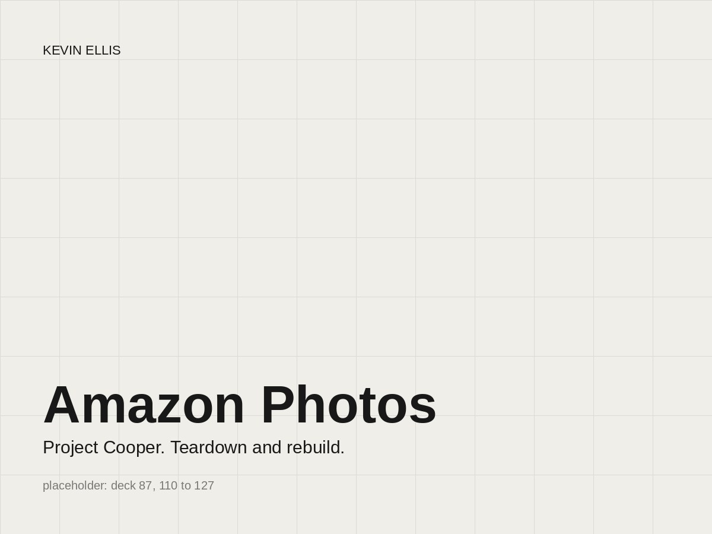

Head of Design and Research. Mobile, web, desktop, Echo Show, Fire TV. Photos began as a cloud storage service that happened to hold photos, and years of feature additions by different teams had accumulated into an experience that didn't compete with the native photo apps on anyone's phone. At six million monthly active customers it was underperforming for a Prime-bundled service. Leadership was committed to fixing it.
2019 to 2022

Placeholder. Final image to come.
Three tenets
We will not ship our org structure.
Functional is not lovable.
We won't force our needs onto the customer.
Each tenet came with evidence. Screenshots taken the day before, without cherry-picking, showed headers, type, color, and illustration styles that changed from screen to screen. Screens were functional and viable and plainly not lovable. And a print-ordering link a product owner had placed in the home header had drawn almost no traffic in a year; printing wasn't in customers' top ten needs. No customer need, no reason to keep it.
deck slides 87 to 88
The audit: one app, several teams, several eras.
Project Cooper
That case got the green light for a full teardown and rebuild. Research settled what customers actually wanted, in order: show me my photos, help me find them fast, let me share them easily, surprise me with memories, show me my account. That's the whole list. The home screen was rebuilt to meet the first two immediately, and the rest of the model followed: my memories, quick-find tools, what I've shared and with whom, my account.
deck slides 110 to 114
The five needs, and the home screen that answers the first two on arrival.
We set shared design and product tenets with Dev and PM partners at the start, so three orgs argued from one set of decision criteria instead of relitigating tradeoffs at every review. The design direction shaped the rebrand that shipped alongside the rebuild. Most of the feature set carried over unchanged, so the gains came from making it usable and findable.
deck slides 124 to 127
Shipped: full-bleed grid, upload status, a date layer that uses depth to keep content flowing.
61% to 78%CSAT within six months of launch8 to 15designers, adding research, motion, and design technology
Illustration
We wanted a voice that contrasted with photo content and avoided the generic vector style on every other app. A designer found Lynn Scurfield's work in the New York Times, warmer and more organic, and we commissioned her.